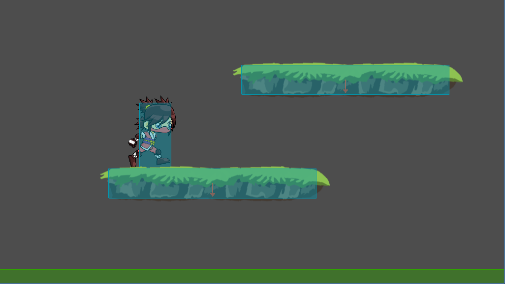
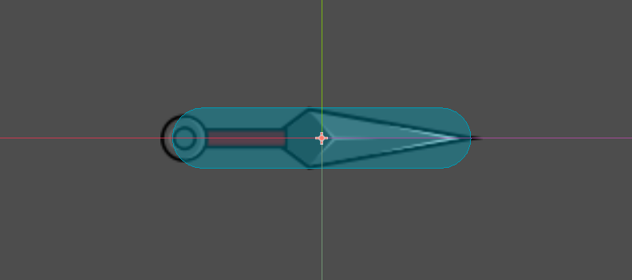

Unit 8.4 Nodes and scenes instancing
In this unit, we will see how to create nodes and reusable scenes and instantiate them in other scenes using Godot Engine.
Nodes
We can reference nodes that are in the scene tree in various ways. The first way is to declare them as member of the script and initialize them in the _ready() function using the get_node() method.
1 2 3 4 5 6 | |
If the node is not a direct child of the current node, we can use the relative path to access it.
1 2 3 4 5 6 7 8 | |
A shorter way to access nodes is to use the $ operator.
1 2 3 4 5 6 7 8 | |
You can also acces the nodes and initialize them directly when declaring them as member variables using the @onready annotation.
1 2 3 | |
You can create nodes dynamically using the Node.new() method and adding them to the scene tree using the add_child() method.
1 2 3 | |
To delete a node and free its memory, use the queue_free() method.
1 | |
Scenes instancing
Scenes in Godot are reusable collections of nodes that can be instantiated in other scenes. This allows for modular and organized game development.
To instance a scene, first, you need to load it using the load() or preload() functions and then create an instance of it using the instance() method.
1 2 3 4 5 | |
Note
load() is used to load a resource at runtime, while preload() loads the resource at compile time, which can improve performance.
The advantage of loading or preloading scenes this way is that you can create multiple instances of the same scene easily at runtime. The scenes loaded this way are called Packed Scenes.
Example: Instancing platforms
Let's create a simple example where we instance platforms in a scene. The first step is to create the platform scene.
- Create a new scene and add a
StaticBody2Dnode as the root. Rename it to "Platform". - Add a
Sprite2Dnode as a child of the "Platform" node and set its texture to a platform image. - Add a
CollisionShape2Dnode as a child of the "Platform" node and set its shape to a rectangle that matches the platform size. - Mark thew "One Way Collision" property of the
CollisionShape2Dnode to allow the player to jump through the platform from below. - Save the scene as
Platform.tscnin thescenesfolder.
StaticBody2D
StaticBody2D nodes are used for objects that do not move but can interact with other physics bodies. They are ideal for platforms, walls, and floors.
Once done the scene, check it in the main scene. Test if the player can jump and land on the platform. Adjust the platform position as needed. You can also adjust the player's jump force and gravity in the player script to make the jumping feel better.
For this example we are going to instantiate platforms at 2 different heights. As we want to do an Endless Runner type of game, we want the platforms to be instantiated from the right side of the screen and move to the left side. When they go out of the screen, we will delete them to free memory.

We want the platforms to move to the left side of the screen, so we will create a new script called Platform.gd and attach it to the Platform scene.
1 2 3 4 5 6 7 8 9 | |
This script also deletes the platform when it goes out of the screen with the queue_free() method.
Now, we are going to instantiate the platforms in the main scene at a random time interval. Add to the main scene 2 timers and name them LowPlatformTimer and UpPlatformTimer. Set their Wait Time properties to 1 and 1.5 seconds respectively, and check the Autostart and One Shot properties.
Timers
A Timer node is used to create time-based events in Godot. It can be set to trigger after a specified duration, either once or repeatedly. It's main properties are:
- Wait Time: The duration in seconds before the timer times out.
- Autostart: If checked, the timer starts automatically when the scene is loaded.
- One Shot: If checked, the timer will only time out once and then stop.
It also has a signal called timeout() that is emitted when the timer reaches zero.
Connect the signal timeout() of both timers to the main scene script. In the timeout functions, we will instance the platforms at different heights.
1 2 3 4 5 6 7 8 9 10 11 12 13 14 15 16 17 18 19 20 21 22 23 24 25 26 27 28 | |
In this script, we preload the Platform.tscn scene and instance it in the timeout functions of both timers. The platforms are positioned at different heights and start from the right side of the screen. The timers are restarted with a random wait time to create variability in platform spawning.
Check the game and adjust the platform speed, spawn rates, y positions, and player jump settings to achieve the desired gameplay feel.
Instancing enemies and rewards
For instantiating enemies, the process is similar to platforms. We will use the bird scene created in the previous unit.
Set the gravity scale of the bird to 0 in the RigidBody2D node to prevent it from falling.
First, create the bird script to move the birds to the left and delete them when they go out of the screen.
1 2 3 4 5 6 7 8 9 | |
In the main scene, preload the bird scene and create a timer to spawn the birds at random intervals.
1 2 3 4 5 6 7 8 9 10 11 12 13 14 | |
The birdYCoords array contains different y positions for the birds to spawn at.
We can proceed similarly for rewards like coins or power-ups. Create a scene for the coin, add a script to move it to the left, and instance it in the main scene using a timer.
Instancing kunais
The last step will be instancing weapons when the player attacks. We will create a simple kunai scene that will be instanced when the player attacks.
Kunai
A kunai is a traditional Japanese tool that is often depicted as a throwing weapon in popular culture, especially in ninja-themed media.
Create the scene inside the player's folder. Add a RigidBody2D node as the root and rename it to "Kunai". Add a Sprite2D node as a child and set its texture to a kunai image. Add a CollisionShape2D node as a child and set its shape, a CapsuleShape2D, to match the kunai size. Save the scene as kunai.tscn.

Preload the kunai scene in the player script and instance it when the player attacks.
1 2 3 4 5 6 7 8 9 10 11 12 13 14 15 16 17 18 | |
The get_tree().create_timer(0.2).timeout.connect(throw_kunai) line creates a timer that calls the throw_kunai function after a delay of 0.2 seconds.
The set_as_top_level(true) method is used to ensure that the kunai's position is not affected by the player's transformations and it is related to the global coordinate system.
To actually throw the kunai, we need to add a script to the kunai scene that applies an impulse to it when it is instanced.
1 2 3 4 5 6 7 8 9 | |
A last detail is to restrict the movement of the character so he can't go out the limits of the screen. We can do this by clamping the player's position in the _physics_process function.
1 2 3 4 5 | |
Add a delay to the kunai throw
To add a delay to the kunai throw, we use a timer that calls the throw_kunai function after a short delay when the attack action is triggered. This simulates the time it takes for the player to perform the throwing animation before the kunai is actually thrown.
Add a new Timer node to the Player scene and name it AttackDelay. Set its Wait Time property to 0.2 seconds, and check the One Shot property.
In the script, modify the attack input handling to the next way:
```gdscript
if Input.is_action_just_pressed("attack") and !isDead:
if $AttackDelay.time_left <= 0:
$AttackDelay.start()
anim_state.travel("throw")
get_tree().create_timer(0.2).timeout.connect(throw_kunai)